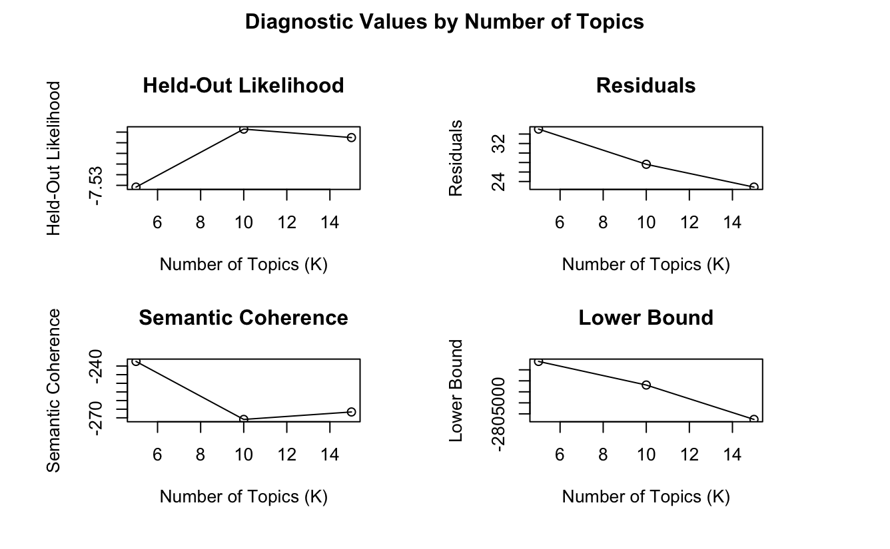
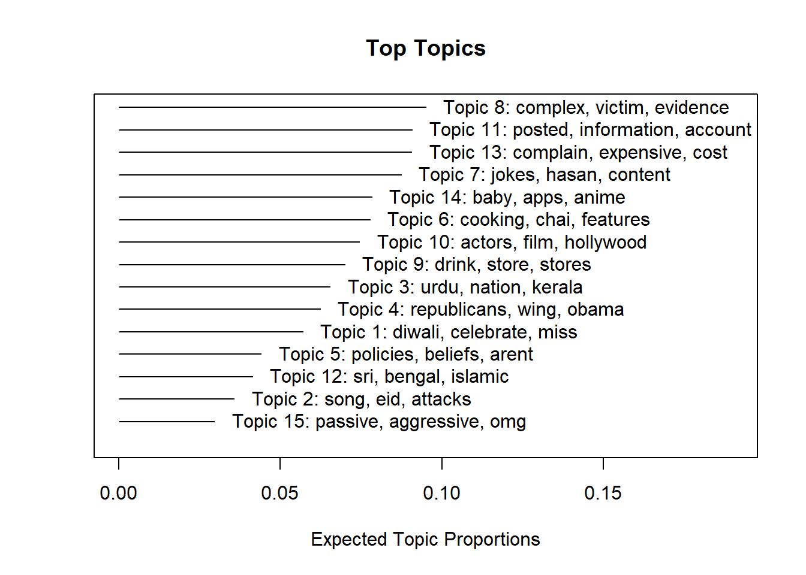
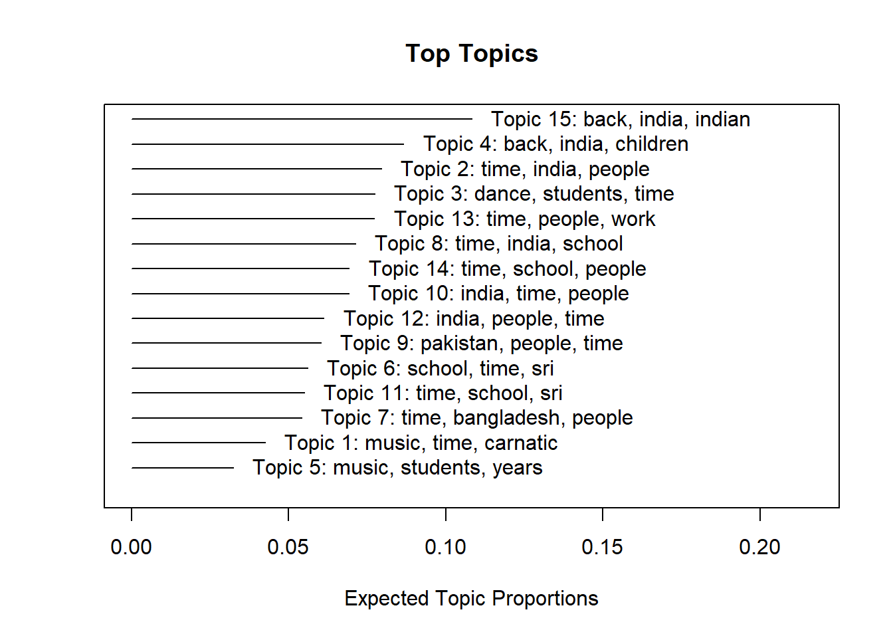

Based on the feedback I received for Post 5, I will be discarding the KWIC analysis and lexical dispersion plots in my final submission, as they are hard to interpret.
In this post, I will create topic models, and compare the results with the dictionary analysis I did in Post 5.
[Discarded] Structural Topic Model
I first tried STM, with age group (older vs. younger) as the covariate of interest. In the code chunk below, I joined the two datasets together, added the covariate and attempted to run the STM.
I noticed that there were some comments labelled “[removed]” that I failed to remove previously. I’ve re-saved the rds object, so that the latest object reflects this change.
Ultimately, I decided to discard this idea for the following reasons:
The model is computationally expensive to run, because of the size of the table after combining both datasets.
Adding old vs. young as a covariate doesn’t work well, because there are only 41 transcripts vs. >100k comments.
It makes more sense to run them as two separate correlated topic models, which I will attempt in the next section.
Correlated Topic Model: Reddit Comments
# create corpus.reddit_corpus <-corpus(reddit_comments_final$comment)# create tokens, remove punctuation, numbers and symbols, then convert to lowercase.reddit_tokens <-tokens(reddit_corpus, remove_punct = T, remove_numbers = T, remove_symbols = T)reddit_tokens <-tokens_tolower(reddit_tokens)# remove tokens that appeared in wordclouds/models that were not meaningful.reddit_tokens <-tokens_remove(reddit_tokens, c("m", "s", "say", "see", "make", "way", "well", "many", "someone", "never", "still", "now", "go", "thing", "things", "know", "think", "also", "said", "going", "want", "t", "one", "lot", "much", "even", "really", "sure", "yeah", "look", "always", "something", "re", "actually", "get", "got", "though", "take", "etc", "can", "like", "don", "saying", "l", "ý", "þ", "doesnt", "finally", "everyday", "lmfao", "yup", "ah", "ya", "yea"))# create and trim dfm, then remove all English stopwords.reddit_dfm <-dfm(reddit_tokens)reddit_dfm <- reddit_dfm %>%dfm_trim(min_termfreq =100, max_termfreq =400) %>%dfm_remove(stopwords("en"))# convert dfm to stm object.reddit_stm <-convert(reddit_dfm, to ="stm")# in the code below, i tested out several different numbers of topics. unfortunately i couldn't plot them all in the same plot, due to the size of the dataset - i managed to save the image for the plot with 5, 10 and 15 topics and i will insert it into the qmd.# reddit_k <- searchK(reddit_stm$documents, reddit_stm$vocab, K = c(2, 3, 4), N = floor(0.1 * nrow(reddit_comments_final)), data = reddit_comments_final, max.em.its = 100, init.type = "Spectral")# x <- plot(reddit_k)# saveRDS(x, "reddit_k.rds")# reddit_k_2 <- searchK(reddit_stm$documents, reddit_stm$vocab, K = c(5, 10, 15), N = floor(0.1 * nrow(reddit_comments_final)), data = reddit_comments_final, max.em.its = 100, init.type = "Spectral")# x2 <- plot(reddit_k_2)# saveRDS(x2, "reddit_k_2.rds")# reddit_k_3 <- searchK(reddit_stm$documents, reddit_stm$vocab, K = c(20, 50), N = floor(0.1 * nrow(reddit_comments_final)), data = reddit_comments_final, max.em.its = 100, init.type = "Spectral")# x3 <- plot(reddit_k_3)# saveRDS(x3, "reddit_k_3.rds")

For pre-processing, I decided to remove all English stopwords, in addition to my own list of non-meaningful words that appeared in previous wordclouds and topic models. I was more liberal with removing words for topic modelling compared to the dictionary analysis, wordclouds and network plots that I did before. This is for 2 reasons: (1) I wanted to reduce dimensionality as much as possible, and (2) I wanted to get meaningful top words that would let me easily label topics.
After trying searchK(), I’ve decided to go with 15 topics, as it seems to provide the best trade-off between achieving high held-out likelihood/semantic coherence and maintaining low residuals.
# run CTM.reddit_ctm <-stm(reddit_stm$documents, reddit_stm$vocab, K =15, verbose =FALSE, max.em.its =100, seed =1357, init.type ="Spectral")reddit_ctm
A topic model with 15 topics, 80831 documents and a 2017 word dictionary.
# plot topic frequency.plot(reddit_ctm)

# how are the topics linked?topicQuality(reddit_ctm, reddit_stm$documents, size =100)
# top 10 words in each topic, based on FREX.reddit_names <-labelTopics(reddit_ctm, n=10)$frexreddit_topics <-rep(NA, 15)for (i in1:15){ reddit_topics[i] <-paste(reddit_names[i,], collapse ="_")}reddit_topics
I had to re-run the model several times, as some tokens showed up in the FREX that were not meaningful (e.g., “finally”, “yup”). I also needed to trim the dfm quite a bit for searchK() and stm() to run, due to the number of rows.
The final dictionary had ~2000 words. Based on frequency alone, the top topics are Topics 8, 13 and 11. However, I would select Topics 10 (note: cut off on the plot, looks like “1” but it’s actually 10), 7 and 11 as the highest quality, as they scored well on both semantic coherence and exclusivity.
Topic 15 seems the least distinctive. The topic quality plot shows it to be the lowest in exclusivity, while the topic correlation plot reflected it as being linked with topics 2, 5, 12 and 14.
Correlated Topic Model: Oral Histories
# create 'quanteda' corpus. oh_corpus <-corpus(transcripts$text)# create tokens, remove punctuation, numbers, symbols and stopwords, then convert to lowercase.oh_tokens <-tokens(oh_corpus, remove_punct = T, remove_numbers = T, remove_symbols = T)oh_tokens <-tokens_select(oh_tokens, pattern =stopwords("en"), selection ="remove")oh_tokens <-tokens_tolower(oh_tokens)# remove tokens that appeared in previous wordclouds/models that were not meaningful.oh_tokens <-tokens_remove(oh_tokens, c("know", "even", "used", "thing", "lot", "yes", "say", "going", "went", "yeah", "come", "actually", "mean", "like", "think", "get", "go", "said", "see", "things", "really", "well", "still", "little", "got", "right", "can", "came", "um", "quite", "bit", "every", "oh", "many", "always", "one", "two", "just", "much", "want", "wanted", "okay", "part", "also", "just", "us", "never", "many", "something", "want", "wanted", "uh", "guy", "guys", "hey", "says", "stuff", "huh", "anyway"))# create and trim dfm.oh_dfm <-dfm(oh_tokens)oh_dfm <- oh_dfm %>%dfm_trim(min_termfreq =10, verbose =FALSE, min_docfreq = .1, docfreq_type ="prop")# how many topics would be good?# oh_k <- searchK(oh_dfm, K = c(5, 10, 15, 20, 50), N = floor(0.1 * nrow(transcripts)), data = transcripts, init.type = "Spectral")# plot(oh_k)
From the plot, it looks like 5 topics is the best. It provides the highest held-out likelihood and semantic coherence, as well as the lowest residuals. That being said, I decided to go with 15 topics. It isn’t very different from 5 topics, and it allows for a fairer comparison with the Reddit topics. Comparisons I make would solely be based on the content of the topics, without losing any breadth due to differences in the number of topics.
To elaborate a little more, when I ran the model with only 5 topics, they were very general (e.g., “immigration/work”, “healthcare”). In comparison, the Reddit topics were a lot more specific (e.g., “conflict about American politics”, “discourse about race/religion”). I wanted to ensure that any differences I observed were true differences, and not just due to an unfairly low number of topics for the oral histories.
# run CTM.oh_ctm <-stm(oh_dfm, K =15, verbose =FALSE, seed =1234, init.type ="Spectral")oh_ctm
A topic model with 15 topics, 41 documents and a 2378 word dictionary.
# plot topic frequency.plot(oh_ctm)

# how are the topics linked?topicQuality(oh_ctm, oh_dfm)
# top 10 words in each topic, based on FREX.oh_names <-labelTopics(oh_ctm, n=10)$frexoh_topics <-rep(NA, 15)for (i in1:15){ oh_topics[i] <-paste(oh_names[i,], collapse ="_")}oh_topics
Similar to what I did for the Reddit data, I re-ran the model several times, removing a few tokens that didn’t add value to the topics generated (e.g., “hey”, “stuff”).
The final dictionary had ~2400 words, just slightly more than the Reddit data. Based on frequency, the top topics are 15, 4 and 2. I would also choose Topics 1, 5 and 11 as being of good quality (good balance between exclusivity and semantic coherence). Topics 1 and 5 were well-correlated too (afterthought: makes sense, because they both concern music –> refer to table in the next section).
Impact on RQs
As discussed in Post 5, these are my RQs:
Research Questions
How have the values and concerns of South Asian Americans changed over time?
Do older South Asian Americans align more with the honour culture prevalent in their home countries? Do younger South Asian Americans align more with the dignity culture prevalent in the USA?
To recap, the dictionary analysis showed that both groups valued self-direction and benevolence. Older immigrants valued achievement more, while younger immigrants valued universalism more. There was some evidence that older immigrants were more aligned with the South Asian honour culture, and that younger immigrants were more aligned with the American dignity culture.
I will first create my own topic labels, based on the FREX top words. The top topics (based on frequency and quality) are in bold.
S/N
Older Immigrants
Younger Immigrants
1
Classical Indian music
Festivities
2
[Mix] life; new technologies
[Mix] life as a South Asian American
3
Classical Indian dance
Recent/ongoing wars; caste issues
4
[Mix] Key South Asian locations, religion, family
American politics
5
Learning musical instruments
Conflict about American politics
6
Sri Lankan experiences
South Asian food
7
Bangladeshi experiences
South Asian American comedians
8
Working in healthcare
Discourse about race, religion
9
Pakistani Muslim experiences
Food and beverages
10
Travel, migration
South Asian American actors
11
Sri Lankan experiences
Subreddit administration; general social media
12
Punjabi experiences
South Asian crises/conflicts
13
Work, education
Finances/cost of living
14
Family
Dating; leisure
15
Life in the US
[Mix] dealing with elders
Considering RQ 1:
One clear difference is in the perception of new technologies. Computers were seen as new technologies by first-generation immigrants, while second-generation immigrants had a keener understanding of more specific recent developments (social media, subreddit moderation).
South Asian identity also seemed to come across as more cohesive for second-generation immigrants. For the first generation, there was a fairly neat divide between the different types of South Asian experiences - Sri Lankan, Bangladeshi, Punjabi, Pakistani, etc - whereas the second generation seemed to consider these groups altogether as one.
For RQ 2:
Echoing the dictionary analysis, there was a focus on achievement-related topics in the oral histories (e.g., work was featured in 2 topics). Meanwhile, the younger generation was interested in many issues beyond their individual lives - wars in non-Western regions and discourse about race, religion and caste issues.
There also seemed to be a greater American orientation among the second-generation - they were tuned in to American politics, actors and comedians.
Limitations
One limitation of this effort is the difference in the type of text. Oral histories, by nature, are quite different from Reddit communities. The former is naturally more focused on the self, so some differences observed could be due to the modality used. Still, the findings are valuable in enriching our understanding of South Asian immigrants in Western countries, and help to move past the collectivist/individualistic cultural types that much of the literature focuses on (Triandis, 1995).
Topic modelling is also an unsupervised method that requires me to use my own judgment to choose the number of topics and the final labels for the topics - interpretations might have been slightly different, had someone else done this.
Future Work
Future work could investigate first- and second-generation immigrants from other regions (e.g., African continent), other types of text (e.g., movie scripts, presidential speeches), other methods of analysis (e.g., Structural Topic Modelling) and common ‘global’ values across cultures.
Bibliography
Triandis, H. C. (1995). Individualism & collectivism. Westview Press.
Source Code
---title: "Post 6"author: "Saaradhaa M"description: "Topic Modelling"date: "12/03/2022"editor: visualformat: html: df-print: paged toc: true code-copy: true code-tools: true css: "styles.css"categories: - post 6 - saaradhaa---```{r}#| label: setup#| warning: false#| message: falseknitr::opts_chunk$set(echo =TRUE, warning =FALSE, message =FALSE)load("post6_saaradhaa.rdata")library(tidyverse)library(stm)library(quanteda)```## IntroductionBased on the feedback I received for Post 5, I will be discarding the KWIC analysis and lexical dispersion plots in my final submission, as they are hard to interpret.In this post, I will create topic models, and compare the results with the dictionary analysis I did in Post 5.## \[Discarded\] Structural Topic ModelI first tried STM, with age group (older vs. younger) as the covariate of interest. In the code chunk below, I joined the two datasets together, added the covariate and attempted to run the STM.```{r}# load oral histories and Reddit comments.# transcripts <- read_rds("transcripts.rds")# reddit_comments_final <- read_rds("reddit_comments_final.rds")# reddit_comments_final$doc_id <- c(42:106133)# reddit_comments_final <- reddit_comments_final[!(reddit_comments_final$comment=="[removed]"), ]# saveRDS(reddit_comments_final, "reddit_comments_final.rds")# reddit_comments_final <- read_rds("reddit_comments_final.rds")# remove ".txt" from doc_id column of oral histories.transcripts$doc_id <-str_remove(transcripts$doc_id, ".txt")# join oral histories and comemtns into 1 table.# table <- reddit_comments_final %>% select(doc_id, comment)# table <- table %>% rename(text = comment)# table <- rbind(table, transcripts)# table$doc_id <- as.numeric(table$doc_id)# create covariate.# table <- mutate(table, age = case_when(doc_id <= 41 ~ "1", doc_id > 41 ~ "2"))# table$age <- as.factor(table$age)# print(dfSummary(table, varnumbers = FALSE, plain.ascii = FALSE, graph.magnif = 0.30, style = "grid", valid.col = FALSE), method = 'render', table.classes = 'table-condensed')# create dfm.# DFM <- dfm(tokens(table$text))# run stm with 5 topics.# myModel <- stm(DFM, K = 5, content = ~ age, prevalence = ~ age, data = table, max.em.its = 1000, seed = 1234, init.type = "Spectral")```I noticed that there were some comments labelled "\[removed\]" that I failed to remove previously. I've re-saved the rds object, so that the latest object reflects this change.Ultimately, I decided to discard this idea for the following reasons:- The model is computationally expensive to run, because of the size of the table after combining both datasets.- Adding old vs. young as a covariate doesn't work well, because there are only 41 transcripts vs. \>100k comments.It makes more sense to run them as two separate correlated topic models, which I will attempt in the next section.## Correlated Topic Model: Reddit Comments```{r}#| message: false#| warning: false# create corpus.reddit_corpus <-corpus(reddit_comments_final$comment)# create tokens, remove punctuation, numbers and symbols, then convert to lowercase.reddit_tokens <-tokens(reddit_corpus, remove_punct = T, remove_numbers = T, remove_symbols = T)reddit_tokens <-tokens_tolower(reddit_tokens)# remove tokens that appeared in wordclouds/models that were not meaningful.reddit_tokens <-tokens_remove(reddit_tokens, c("m", "s", "say", "see", "make", "way", "well", "many", "someone", "never", "still", "now", "go", "thing", "things", "know", "think", "also", "said", "going", "want", "t", "one", "lot", "much", "even", "really", "sure", "yeah", "look", "always", "something", "re", "actually", "get", "got", "though", "take", "etc", "can", "like", "don", "saying", "l", "ý", "þ", "doesnt", "finally", "everyday", "lmfao", "yup", "ah", "ya", "yea"))# create and trim dfm, then remove all English stopwords.reddit_dfm <-dfm(reddit_tokens)reddit_dfm <- reddit_dfm %>%dfm_trim(min_termfreq =100, max_termfreq =400) %>%dfm_remove(stopwords("en"))# convert dfm to stm object.reddit_stm <-convert(reddit_dfm, to ="stm")# in the code below, i tested out several different numbers of topics. unfortunately i couldn't plot them all in the same plot, due to the size of the dataset - i managed to save the image for the plot with 5, 10 and 15 topics and i will insert it into the qmd.# reddit_k <- searchK(reddit_stm$documents, reddit_stm$vocab, K = c(2, 3, 4), N = floor(0.1 * nrow(reddit_comments_final)), data = reddit_comments_final, max.em.its = 100, init.type = "Spectral")# x <- plot(reddit_k)# saveRDS(x, "reddit_k.rds")# reddit_k_2 <- searchK(reddit_stm$documents, reddit_stm$vocab, K = c(5, 10, 15), N = floor(0.1 * nrow(reddit_comments_final)), data = reddit_comments_final, max.em.its = 100, init.type = "Spectral")# x2 <- plot(reddit_k_2)# saveRDS(x2, "reddit_k_2.rds")# reddit_k_3 <- searchK(reddit_stm$documents, reddit_stm$vocab, K = c(20, 50), N = floor(0.1 * nrow(reddit_comments_final)), data = reddit_comments_final, max.em.its = 100, init.type = "Spectral")# x3 <- plot(reddit_k_3)# saveRDS(x3, "reddit_k_3.rds")```For pre-processing, I decided to remove all English stopwords, in addition to my own list of non-meaningful words that appeared in previous wordclouds and topic models. I was more liberal with removing words for topic modelling compared to the dictionary analysis, wordclouds and network plots that I did before. This is for 2 reasons: (1) I wanted to reduce dimensionality as much as possible, and (2) I wanted to get meaningful top words that would let me easily label topics.After trying searchK(), I've decided to go with 15 topics, as it seems to provide the best trade-off between achieving high held-out likelihood/semantic coherence and maintaining low residuals.```{r}#| warning: false# run CTM.reddit_ctm <-stm(reddit_stm$documents, reddit_stm$vocab, K =15, verbose =FALSE, max.em.its =100, seed =1357, init.type ="Spectral")reddit_ctm# plot topic frequency.plot(reddit_ctm)# how are the topics linked?topicQuality(reddit_ctm, reddit_stm$documents, size =100)plot(topicCorr(reddit_ctm), vlabels =c("1", "2", "3", "4", "5", "6", "7", "8", "9", "10", "11", "12", "13", "14", "15"), vertex.color ="lightpink", vertex.label.cex =0.75)# top 10 words in each topic, based on FREX.reddit_names <-labelTopics(reddit_ctm, n=10)$frexreddit_topics <-rep(NA, 15)for (i in1:15){ reddit_topics[i] <-paste(reddit_names[i,], collapse ="_")}reddit_topics```I had to re-run the model several times, as some tokens showed up in the FREX that were not meaningful (e.g., "finally", "yup"). I also needed to trim the dfm quite a bit for searchK() and stm() to run, due to the number of rows.The final dictionary had \~2000 words. Based on frequency alone, the top topics are Topics 8, 13 and 11. However, I would select Topics 10 (note: cut off on the plot, looks like "1" but it's actually 10), 7 and 11 as the highest quality, as they scored well on both semantic coherence and exclusivity.Topic 15 seems the least distinctive. The topic quality plot shows it to be the lowest in exclusivity, while the topic correlation plot reflected it as being linked with topics 2, 5, 12 and 14.## Correlated Topic Model: Oral Histories```{r}# create 'quanteda' corpus. oh_corpus <-corpus(transcripts$text)# create tokens, remove punctuation, numbers, symbols and stopwords, then convert to lowercase.oh_tokens <-tokens(oh_corpus, remove_punct = T, remove_numbers = T, remove_symbols = T)oh_tokens <-tokens_select(oh_tokens, pattern =stopwords("en"), selection ="remove")oh_tokens <-tokens_tolower(oh_tokens)# remove tokens that appeared in previous wordclouds/models that were not meaningful.oh_tokens <-tokens_remove(oh_tokens, c("know", "even", "used", "thing", "lot", "yes", "say", "going", "went", "yeah", "come", "actually", "mean", "like", "think", "get", "go", "said", "see", "things", "really", "well", "still", "little", "got", "right", "can", "came", "um", "quite", "bit", "every", "oh", "many", "always", "one", "two", "just", "much", "want", "wanted", "okay", "part", "also", "just", "us", "never", "many", "something", "want", "wanted", "uh", "guy", "guys", "hey", "says", "stuff", "huh", "anyway"))# create and trim dfm.oh_dfm <-dfm(oh_tokens)oh_dfm <- oh_dfm %>%dfm_trim(min_termfreq =10, verbose =FALSE, min_docfreq = .1, docfreq_type ="prop")# how many topics would be good?# oh_k <- searchK(oh_dfm, K = c(5, 10, 15, 20, 50), N = floor(0.1 * nrow(transcripts)), data = transcripts, init.type = "Spectral")# plot(oh_k)```From the plot, it looks like 5 topics is the best. It provides the highest held-out likelihood and semantic coherence, as well as the lowest residuals. **That being said, I decided to go with 15 topics.** It isn't very different from 5 topics, and it allows for a fairer comparison with the Reddit topics. Comparisons I make would solely be based on the [content]{.underline} of the topics, without losing any breadth due to differences in the number of topics.To elaborate a little more, when I ran the model with only 5 topics, they were very general (e.g., "immigration/work", "healthcare"). In comparison, the Reddit topics were a lot more specific (e.g., "conflict about American politics", "discourse about race/religion"). I wanted to ensure that any differences I observed were true differences, and not just due to an unfairly low number of topics for the oral histories.```{r}# run CTM.oh_ctm <-stm(oh_dfm, K =15, verbose =FALSE, seed =1234, init.type ="Spectral")oh_ctm# plot topic frequency.plot(oh_ctm)# how are the topics linked?topicQuality(oh_ctm, oh_dfm)plot(topicCorr(oh_ctm), vlabels =c("1", "2", "3", "4", "5", "6", "7", "8", "9", "10", "11", "12", "13", "14", "15"), vertex.color ="lightpink", vertex.label.cex =0.75)# top 10 words in each topic, based on FREX.oh_names <-labelTopics(oh_ctm, n=10)$frexoh_topics <-rep(NA, 15)for (i in1:15){ oh_topics[i] <-paste(oh_names[i,], collapse ="_")}oh_topics# save.image("post6_saaradhaa.RData")```Similar to what I did for the Reddit data, I re-ran the model several times, removing a few tokens that didn't add value to the topics generated (e.g., "hey", "stuff").The final dictionary had \~2400 words, just slightly more than the Reddit data. Based on frequency, the top topics are 15, 4 and 2. I would also choose Topics 1, 5 and 11 as being of good quality (good balance between exclusivity and semantic coherence). Topics 1 and 5 were well-correlated too (afterthought: makes sense, because they both concern music --\> refer to table in the next section).## Impact on RQsAs discussed in Post 5, these are my RQs:::: callout-tip## Research Questions1. How have the values and concerns of South Asian Americans changed over time?2. Do older South Asian Americans align more with the honour culture prevalent in their home countries? Do younger South Asian Americans align more with the dignity culture prevalent in the USA?:::To recap, the dictionary analysis showed that both groups valued self-direction and benevolence. Older immigrants valued achievement more, while younger immigrants valued universalism more. There was some evidence that older immigrants were more aligned with the South Asian honour culture, and that younger immigrants were more aligned with the American dignity culture.I will first create my own topic labels, based on the FREX top words. The top topics (based on frequency and quality) are in **bold**.| S/N | Older Immigrants | Younger Immigrants ||--------------|-------------------------------|----------------------------|| 1 | **Classical Indian music** | Festivities || 2 | **\[Mix\] life; new technologies** | \[Mix\] life as a South Asian American || 3 | Classical Indian dance | Recent/ongoing wars; caste issues || 4 | **\[Mix\] Key South Asian locations, religion, family** | American politics || 5 | **Learning musical instruments** | Conflict about American politics || 6 | Sri Lankan experiences | South Asian food || 7 | Bangladeshi experiences | **South Asian American comedians** || 8 | Working in healthcare | **Discourse about race, religion** || 9 | Pakistani Muslim experiences | Food and beverages || 10 | Travel, migration | **South Asian American actors** || 11 | **Sri Lankan experiences** | **Subreddit administration; general social media** || 12 | Punjabi experiences | South Asian crises/conflicts || 13 | Work, education | **Finances/cost of living** || 14 | Family | Dating; leisure || 15 | **Life in the US** | \[Mix\] dealing with elders |Considering RQ 1:- One clear difference is in the perception of new technologies. Computers were seen as new technologies by first-generation immigrants, while second-generation immigrants had a keener understanding of more specific recent developments (social media, subreddit moderation).- South Asian identity also seemed to come across as more cohesive for second-generation immigrants. For the first generation, there was a fairly neat divide between the different types of South Asian experiences - Sri Lankan, Bangladeshi, Punjabi, Pakistani, etc - whereas the second generation seemed to consider these groups altogether as one.For RQ 2:- Echoing the dictionary analysis, there was a focus on achievement-related topics in the oral histories (e.g., work was featured in 2 topics). Meanwhile, the younger generation was interested in many issues beyond their individual lives - wars in non-Western regions and discourse about race, religion and caste issues.- There also seemed to be a greater American orientation among the second-generation - they were tuned in to American politics, actors and comedians.## LimitationsOne limitation of this effort is the difference in the type of text. Oral histories, by nature, are quite different from Reddit communities. The former is naturally more focused on the self, so some differences observed could be due to the modality used. Still, the findings are valuable in enriching our understanding of South Asian immigrants in Western countries, and help to move past the collectivist/individualistic cultural types that much of the literature focuses on (Triandis, 1995).Topic modelling is also an unsupervised method that requires me to use my own judgment to choose the number of topics and the final labels for the topics - interpretations might have been slightly different, had someone else done this.## Future WorkFuture work could investigate first- and second-generation immigrants from other regions (e.g., African continent), other types of text (e.g., movie scripts, presidential speeches), other methods of analysis (e.g., Structural Topic Modelling) and common 'global' values across cultures.## BibliographyTriandis, H. C. (1995). *Individualism & collectivism.* Westview Press.